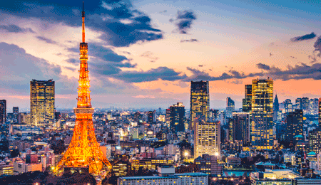
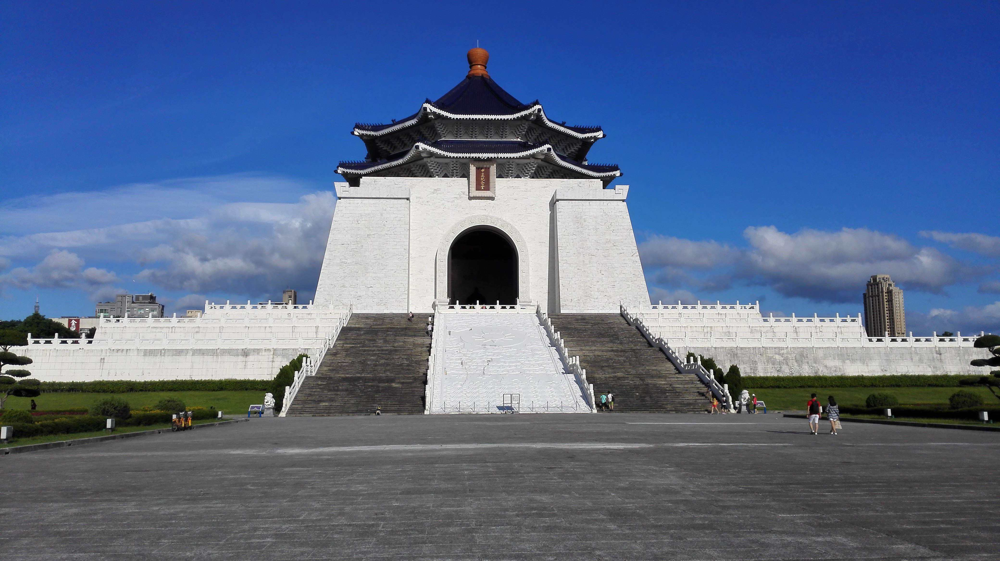
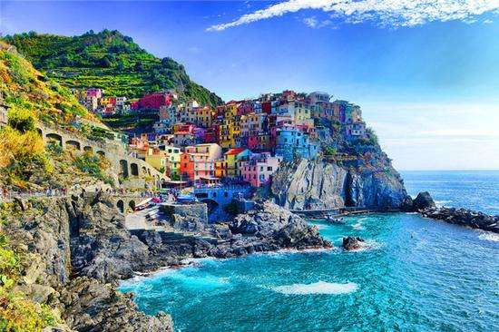

日本东京塔
东京塔正式名称为日本电波塔，又称东京铁塔 ，位于日本东京都港区发芝公园，是一座是以巴黎埃菲尔铁塔 为范本而建造的红白色铁塔。
云南丽江古城
丽江古城内的街道依山傍水修建，以红色角砾岩铺就，有四方街、木府、五凤楼、黑龙潭、文昌宫、王丕震纪念馆、雪山书院、王家庄基督教堂等景点。

台北中正纪念堂
纪念楼造型仿北京天坛之顶、埃及金字塔之体，是中国宫殿式建筑，整体建筑则以蓝、白二色搭配相和，有着自由、平等的寓意。

意大利五渔村
五渔村位于意大利利古里亚大区(Liguria)拉斯佩齐亚省海沿岸地区。
迪拜港
迪拜港位于阿联酋（全称：阿拉伯联合酋长国THE UNITED ARAB EMIRATES）东北沿海，濒临波斯湾的南侧。又名拉希德港（MINA RASHID）。
马尔代夫卡尼岛
卡尼岛位于被称作“地球上的香格里拉”的马尔代夫，拥有2000多个小珊瑚岛，卡尼岛距首都马累20公里。